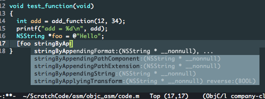

Getting objective-c code completion on emacs
March 2, 2016 inTo get full code completion for objective-c in emacs you need to:
- Have
company-modeinstalled, its a generic backend for code completion in emacs and the community loves it. - Add some elisp to your
init.el.
I assume you have company-mode already installed, this will provide company-clang as well which is what will provide completion.
Some elisp
Here is my elisp that I use, you’ll notice that I also get codecompletion on Linux for objective-c, you can too by following my other blog post.
(defvar osx-base-path
"/Applications/Xcode.app/Contents/Developer/Platforms/")
(if (equal system-type 'darwin)
; Only the then clause needs a progn, else part doesn't need it.
(progn
;; Forgot what this was for..think some os x issues.
(setenv "LC_CTYPE" "UTF-8")
(setq mac-option-modifier 'super
flycheck-make-executable "/usr/local/bin/make"
company-clang-executable
(concat "/Applications/Xcode.app/Contents/Developer/"
"Toolchains/XcodeDefault.xctoolchain/usr/bin/clang++")
company-clang-arguments
`("-std=c++11"
"-isysroot"
; If coding for iOS
;; (concat osx-base-path
;; "iPhoneOS.platform/Developer/SDKs/iPhoneOS9.2.sdk")
; If coding for OS X
,(concat osx-base-path
"MacOSX.platform/Developer/SDKs/MacOSX10.11.sdk")
"-I" "/usr/include/c++/4.2.1"
"-I" "/usr/local/lib/ocaml/")
flycheck-c/c++-clang-executable
(concat "/Applications/Xcode.app/Contents/Developer/"
"Toolchains/XcodeDefault.xctoolchain/usr/bin/clang++")
mac-command-modifier 'meta))
(set-face-attribute 'default nil :height 110)
(setq company-clang-executable "armv7-apple-darwin11-clang"
company-clang-arguments '("-std=c++11"
"-isysroot"
"/home/gar/.nix-profile/iPhoneOS9.2.sdk"
"-I/usr/local/lib/ocaml/")))
(setq company-backends '(company-clang
company-capf
company-c-headers
company-jedi))
(add-to-list 'auto-mode-alist '("\\.mm\\'" . objc-mode))
(global-set-key (kbd "M-/") 'company-complete)Some of that is alittle opinionated and but the company-clang-arguments is the most important part really. Update the SDKs file name ending as this post becomes outdated.
Here’s what you should expect to see:
)